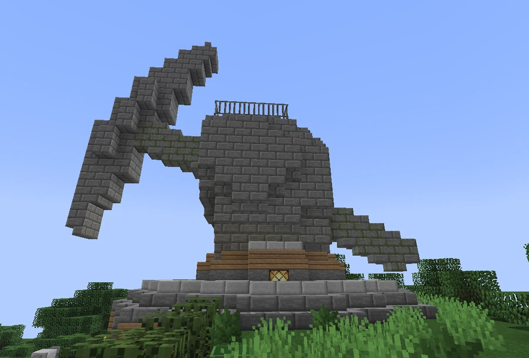

Broviet Union
The communist state that succeeded the imperial regime in CRN065’s account. Its legacy is associated with monumental architecture and the memory of an age of collective greatness.
From revolt to communist state
The Broviet Union is the name given to the regime that succeeded Czar Broseph III and his imperial army. Tradition describes the revolution as an attempt to transform Broville’s social and urban organization radically. Diary 1925 records the struggle for the valley in 1924 and 1925, changing authors when the position changes hands.
In a separate account, CRN065 characterizes the war as an internal revolt whose anti-imperialist side sought outside assistance. His letter places the communist state’s prosperity after the Czar’s death and up until the technological era. The succession of regimes can be identified, but the fragmentary records do not establish the Union’s founding and dissolution dates.
Architectural heritage
The Union is remembered as a lasting influence on Broville’s architectural style, characterized by imposing structures, rigorous symmetry and raw materials combined with expensive ornamentation. Emerald blocks on some administrative buildings are cited as examples of this legacy.
The Great Broviet Union Monnument is the most specific attribution: the large sculpture of a hand grasping a pickaxe is identified as a monument to the Union’s glory. As well as honoring the work of the city’s builders, it would therefore preserve a political reference to the regime.



Decline and memory
The community account connects the weakening of central authority with the growth of corporations and private enterprises. By taking control of resources and urban planning, these organizations are said to have encouraged the transition to the corporate era. SOLAR illustrates the importance of companies in later Broville; CRN065’s letter places the change broadly in the technological era without specifying its duration or each company’s individual contribution.
Despite the regime’s disappearance, the community description records a current of support for the “Old Regime” among residents and nostalgia for an age of collective greatness. Together with the monuments, this memory keeps the Union present in the city’s identity.
Original documents
Read the in-world texts behind this article. Expand a title to read its full transcription; some texts reveal clues and endings.
Read original document — Diary 1925Brovillian Imperial Army · 11 pages · Spoilers
Page 1
Page 2
Page 3
Page 4
Page 5
Page 6
Page 7
Page 8
Page 9
Page 10
Page 11
Book recorded at -2147 17 2865. Source: SPOILER_bookOutput.txt. Original spelling retained.
Read original inscription — Pro-Union placardInscription
Inscription recorded at -462 102 1877. Source: SPOILER_signOutput.txt. Original spelling retained.
Read original inscription — History exhibit labelInscription
Inscription recorded at -182 72 1733. Source: SPOILER_signOutput.txt. Original spelling retained.
Read original inscription — History exhibit wordplayInscription
Inscription recorded at -182 71 1733. Source: SPOILER_signOutput.txt. Original spelling retained.
See also
Sources and references
- v11.4.4 maps, signs, books and items World records
- Union Broviet · Broville Wiki Community archive
- TIMELOG3 and player... — CRN065 World book
- Diary 1925 — Brovillian Imperial Army World book
Text adapted and expanded from Union Broviet (contributors and history, revision 5146). Adapted text is available under CC BY-SA 3.0.